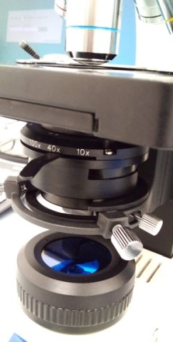
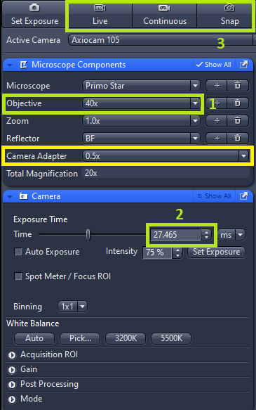
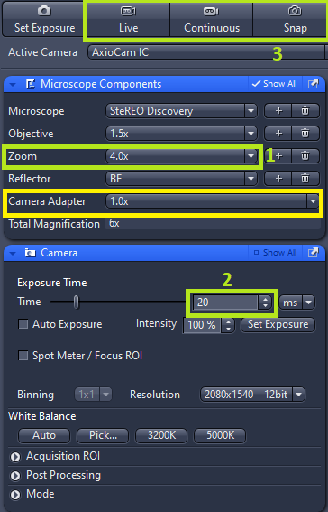
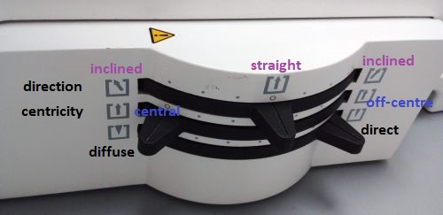

- Transfer your images to OMERO or to the shared
drive. Do not save any images to desktop.
- If you have used the oil immersion objective, wipe it clean. Use the lens cleaning tissue moistened at the solvent dispenser. Always wipe the objective only once, in one direction. If this is not sufficient, repeat with a new piece of tissue. Never reuse the tissue.
- Cover the microscope with the dust cover when not in use.
- Make sure you leave the microscope room clean. Spray with 70% ethanol and wipe any surfaces that could have been in contact with biological material. Do not leave any samples or any other belongings behind.
Primo Star:
1. Open ZEN 3.2 Lite. Note: it may take some time for the PC to recognise the USB camera. If you start the software before the camera has been recognised, the software will not be able to communicate with the camera
2. Select the objective you want to use and adjust the condenser aperture to the setting recommended for the selected objective (40x objective is selected in the picture). Load the sample on the stage.

3. Turn on the illumination and adjust its intensity (A). Focus the sample using the focusing knob (B).
4. Update the objective in the software (1). Make sure the camera adapter magnification is 0.5. Do not change this value.
5. Set the camera exposure (2) such that the image is not saturated either by manually entering the value or by using the Set Exposure function.
6. Observe live camera image by pressing Live or Continuous and Capture static images by pressing Snap (3).
V.8 SteREO:
1. Open ZEN 3.2 Lite.
2. Switch on the lamp(s) you intent to use - either transmitted light illumination (sample illuminated from below) or reflected light illumination (sample illuminated by goose-neck lightguides from top) and adjust the illumination intensity by the knobs at the respective lamps.
3. Place your sample on the stage, select the zoom (A) and focus the sample by the focusing knob (B). Toggle between eyepiece and camera observation (C).

4. Update the zoom setting in the software (1). Make sure the camera adapter magnification is 1. Do not change this value.
5. Set the camera exposure (2)
such that the image is not saturated either by manually entering the
value or by using the Set Exposure function.
6. Observe live camera image by pressing Live or Continuous and Capture static images by pressing Snap (3).
7. Adjust the transmitted light illumination mode (brightfield, darkfield, oblique illumination) by the levers on the right-hand side of the microscope base.
For brightfield set illumination direction to straight, beam position central and use either diffuse or direct illumination (as in the picture).
For darkfield use direct illumination, maximally inclined beam (in either direction) and off-centre beam position.
For oblique illumination use direct illumination and intermediate beam inclination and off-centricity